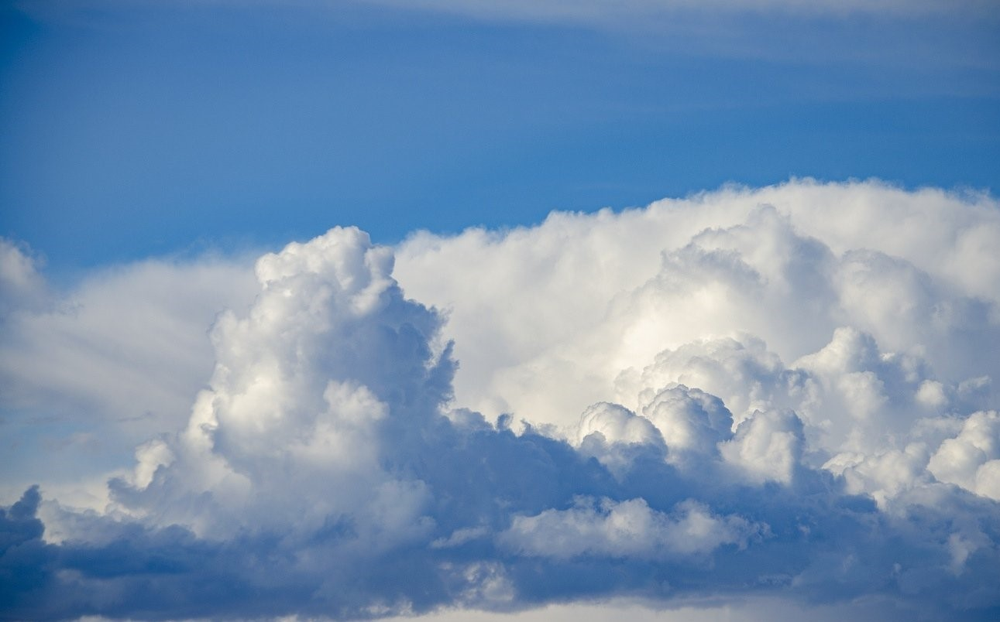

ОБЛАКА
... если долго глядеть на вечерние облака, что несутся непонятно откуда и неведомо куда,
начинает
казаться, будто и тебя саму уносит куда-то на край света.
- Харуки Мураками
Создание облаков происходит за счет испарения воды с поверхности земли, она поднимается вверх и по мере подъема влажный воздух охлаждается, превращая пар в воду или мелкие кристаллы льда.
Они, взвешенные под действием воздуха, циркулирующего в атмосфере, группируются вместе, образуя облако. Когда многочисленные капли воды встречаются, они образуют более толстые капли, которые, обладая достаточным весом, могут падать и достигать земли, вызывая осадки.
Облака могут плавать из-за того, что под ними находится воздушная масса, так как она весит намного больше, чем облако.
Низкий уровень
Облака низкого уровня включают в себя различные типы облачности, которые могут образоваться на высоте от поверхности земли до около 2 километров.
-
Слоистые облака
Слоистые облака в основном плоские, безликие и сероватого вида. Эти облака образуются немного над землей на более низкой высоте либо из-за стихания более холодного воздуха, либо из-за подъема утреннего тумана над регионом. Они также известны как облака "высокого тумана".
Образование слоистых облаков обычно указывает на длительный облачный покров со слабым дождем и небольшим количеством снегопада. Эти облака гораздо более устойчивы в антициклонических условиях. Хотя может выпасть небольшой дождь, это облако не указывает на большую метеорологическую активность.
-

Кучевые облака
Кучевые облака обычно образуются в ясные дни ниже 2000 метров над уровнем моря. Они имеют четко определенные ребра и появляются либо в кластерах, либо в сетках.
Хотя кучевые облака не сильно связаны с осадками, погодные факторы, такие как влажность и градиент температуры, могут привести к их быстрому превращению в кучево-дождевые облака, что приведет к сильному дождю и грозам.
-
Слоисто-кучевые облака
Слоисто-кучевые облака в основном представляют собой более крупную и менее гладкую версию кучевых облаков. Они довольно распространены в субтропических и полярных регионах.
Такие облака часто приводят только к небольшому дождю или снегопаду.
-
Кучево-дождевые облака
Кучево-дождевые облака, также известные как возвышающиеся вертикальные кучево-дождевые облака, представляют собой большие и плотные облака, образованные мощными восходящими воздушными потоками.
Типичное кучево-дождевое облако может простираться от низкой до средней высоты, а в исключительных случаях - до больших высот. Обычно эти облака имеют наковальню верхнего слоя и темное основание.
Кучево-дождевые облака - явный признак неизбежных экстремальных погодных условий. Они могут вызывать сильные молнии, внезапные наводнения, а также способны вызывать торнадо.
Средний уровень
Облака среднего яруса представляют собой светло-серый, синевато-серый, иногда белый облачный массив в виде сплошной пелены, а также в виде волн (гряд), пластин или хлопьев, разделенных просветами голубого неба. Эти облака существуют в диапазоне высот 2-4 км на полюсах и 2-8 км над тропиками.
-
Слоисто дождевые облака
Слоисто-дождевые облака представляют собой темное и в основном бесформенное облако, которое зарождается на средних высотах и простирается вертикально до низких и высоких уровней. Их можно найти ниже 3000 метров над уровнем моря.
Такие облака признак возможного умеренного, но постоянного дождя, принесенные теплым фронтом. Они, в отличие от кучево-дождевых облаков, обычно не производят грозы, но из-за нестабильности теплых фронтов грозы возможны.

-
Высококучевые облака
Высокослоистые облака характеризуется как облако с однородными сероватыми слоями, состоящими в основном из кристаллов льда. Образованию этих облаков происходит когда конденсация водяного пара из большой устойчивой воздушной массы достигают средних высот.
Такие облака могут вызвать дождь, как правило, когда они сгущаются. В большинстве случаев начинается легкий ливень, а затем постепенно перерастает в умеренный дождь.
Высокий уровень
Они развиваются на высоте от 6.000 до 13.000 метров над уровнем моря, потому что на этих высотах воздух достаточно холодный, они состоят из кристаллов льда. Высокие облака не осаждаются, но могут указывать на изменение погоды.
-
Перистые облака
Перистые облака легко распознать по их тонким, похожим на перья прядям. Они обычно формируются выше 5500 метров, а в крайних случаях - на 13000 метров над уровнем моря. Вместо водяных паров перистые облака состоят из тонкого льда (выше 5500 м, водяной пар подвергается осаждению). Они вносят значительный вклад в парниковый эффект на Земле.
Еще в конце 1800-х метеорологи использовали для наблюдения за этими облаками, чтобы предсказать ураганы.
-
Перисто-слоистые облака
Перисто-слоистые облака - это тонкие, однородные и полупрозрачные облака, которые чрезвычайно трудно распознать. Эти облака обычно имеют ореолы, кольцеобразные элементы, окружающие Солнце и / или Луну.
Обычно перистые облака сигнализируют о приближении теплого фронта к региону и вместе с ним приносят осадки. Эти облака при формировании над полярными областями могут нести азотную кислоту.
-
Перисто-кучевые облака
Перисто-кучевые облака - это небольшие и пятнистые белые облака, которые обычно появляются на высоте от 4800 до 11 800 метров над уровнем моря. в этих облаках содержится небольшое количество переохлажденной жидкой воды, а не льда.